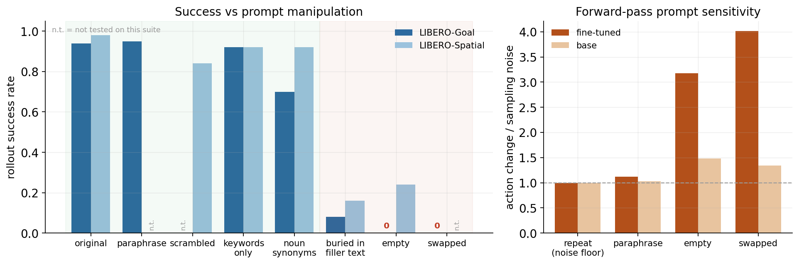
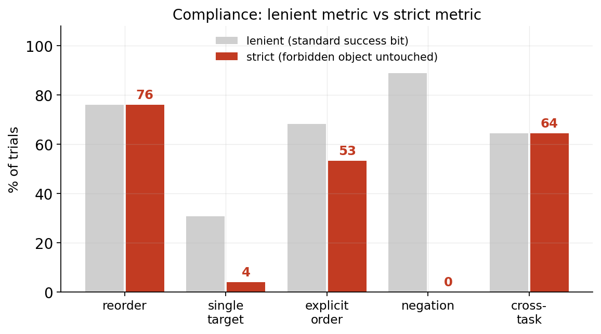
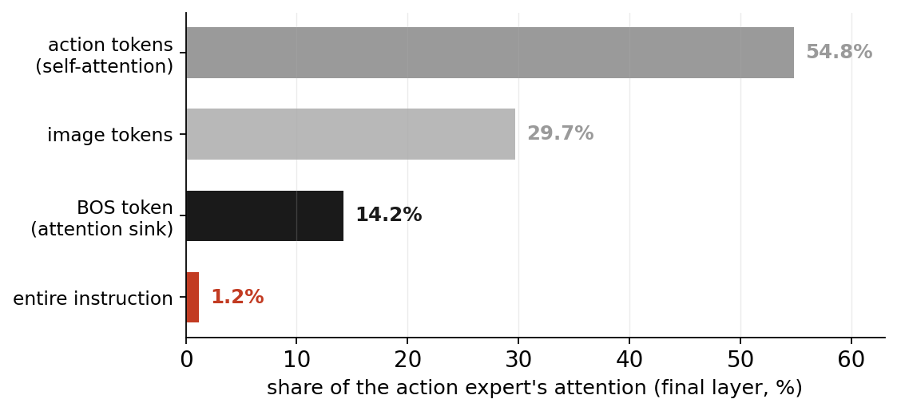
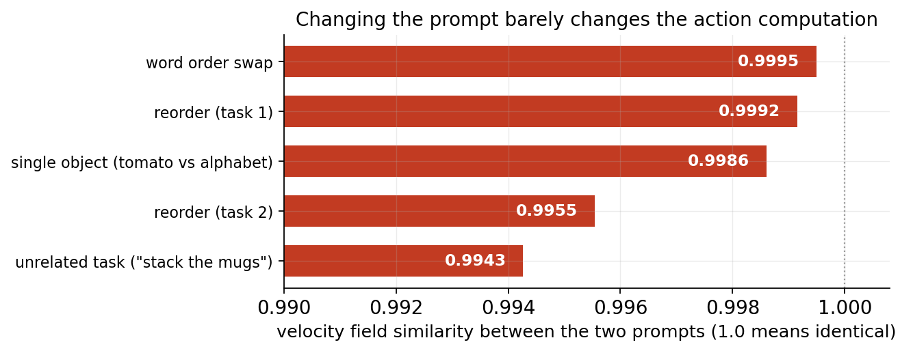
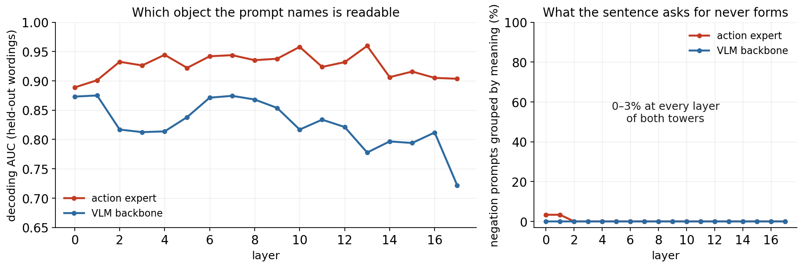
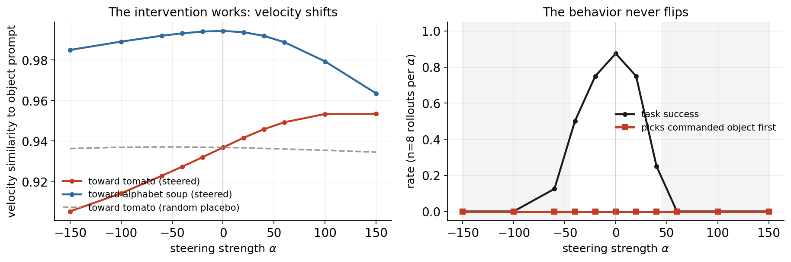
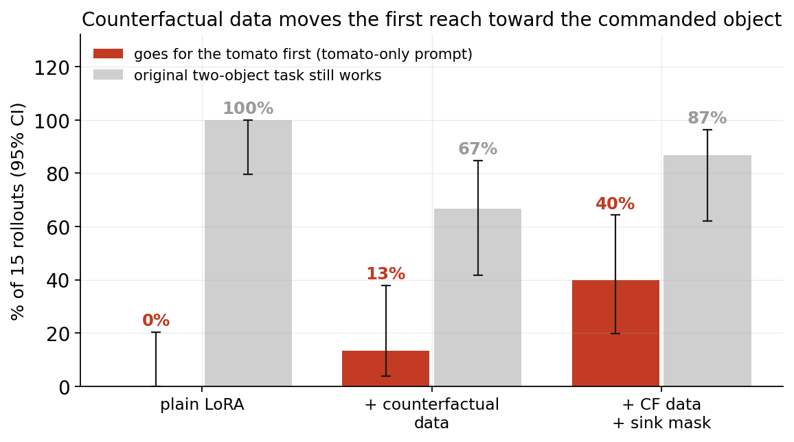

What Does π0 Actually Do With Your Instruction?
A close look at how a fine-tuned vision-language-action model uses language on LIBERO
- π0 does depend on its language instruction. Deleting it can drop success from 94–98% to as low as 0%. But the instruction works as a task label that picks which trained routine to run.
- Instructions that ask for a change inside a routine are ignored. Changing the instruction from moving only one object instead of the original two objects results in failure. Avoiding an object works 0% of the time. The robot replays its training trajectory instead.
- The object named by the prompt is readable inside the network at every layer (probe AUC 0.89–0.96), yet the policy never acts on it. The meaning of negation never forms anywhere in the network.
- Three inference-time fixes fail. Sampler noise, forced attention, and hidden-state steering each verifiably do their job without changing the behavior. Behavior starts to move only when we add counterfactual training data through LoRA, which points the repair at the fine-tuning data.
1 · Why we did this
Vision-language-action models (VLAs) like π0 [1] combine a vision-language backbone (PaliGemma) with an "action expert" that generates robot actions, and they reach about 95% success on the LIBERO benchmark after fine-tuning. Two recent robustness benchmarks, LIBERO-Plus [2] and LIBERO-Pro [3], reported something surprising. Instruction perturbations hurt these models far less than physical or visual shifts (for π0 on LIBERO-Plus, language perturbations cost ~33 points while camera and robot-pose shifts cost ~78–88), and simple paraphrasing costs almost nothing. A common takeaway from those papers is that VLAs basically do not use language.
We wanted to test that takeaway directly, because "does the model use language?" is really several different questions. Our project works through four of them in order. What exactly fails? (behavior) Where in the network does it fail? (mechanism) Is the language information even present inside the model? (probing) Can we fix it without retraining? (intervention). Most existing work stops at the first question. The contributions of this project are mainly in the last three.
2 · Setup, and how "success" is measured
We use the LIBERO task suites (Spatial, Goal, and a two-object kitchen task from LIBERO-90 for the fine-grained experiments). Rollouts replan every 5 steps, matching the official openpi evaluation loop.
3 · Finding 1 — The instruction works like a task label
Our first set of experiments manipulates the prompt during full rollouts (10 tasks × 5 trials per condition per suite). We also ran a forward-pass test that measures how much the predicted action chunk changes when only the prompt changes, normalized by the model's own sampling noise (how much the output changes when you simply re-sample with the same prompt).

Putting the conditions together, the way π0 reads its instruction has three properties:
| Property | Evidence | What it suggests |
|---|---|---|
| The instruction is necessary | empty prompt scores 0.00 (Goal) and 0.24 (Spatial), and with a swapped prompt the model never performs the scene's own task | π0 is using language as a task label. Swapping the prompt to a different task's instruction that it had been finetuned on in the same environment leads it to perform the new swapped task, not the original task. |
| Word order is irrelevant | scrambled words 0.84, content words only 0.92, paraphrase 0.95 | the model is matching a set of familiar words and does not appear to parse the sentence |
| The match is tied to exact wording | noun synonyms drop Goal to 0.70 (two tasks fall to 0/5), and hiding the instruction inside filler text drops success to 0.08 / 0.16 | the model recognizes the specific words and prompt format it saw during training, which looks like memorized matching instead of reading |
This also explains the LIBERO-Plus/Pro observation, including its mixed middle ground. Instruction perturbations that keep the familiar task words intact (paraphrases) hurt the performance only a little, because the model can still recognize which task is being asked for. Perturbations that bury or displace those words cost a lot. We also show from the above demo that the VLA isn't purely disregarding the language instructions and does not rely purely on vision alone. There are different instruction prompts that illicit different actions as long as it exists in the training data. This contradicts the interepretation that VLAs "ignore" language, but rather uses the prompt more of a label, rather than understanding the actual language. The π0 does listen and the real question is how much detail is in the prompt itself.
4 · Finding 2 — Inside a task, the words stop mattering
The harder test is whether the instruction can change what happens within a task. We picked a two-object LIBERO task (training behavior is to put an alphabet-soup box and a tomato-sauce can into a basket) and wrote 20 prompt variants in five categories. Reorderings (A), single-object requests (B), explicit ordering (C), negation (D), and cross-task prompts (E). We ran 15 seeds per prompt (300 episodes) and scored everything with the strict metric.

| Prompt category | Example | Strict compliance (only the new propmt objects are moved) | Lenient compliance (the original prompt objects are moved) |
|---|---|---|---|
| A · reorder the mentions | "put the tomato sauce and the alphabet soup…" | 76% | 84% |
| B · single-object request | "put the tomato sauce in the basket" | 4% | 28%* |
| C · explicit order | "first put the tomato sauce…, then…" | 53% | 72% |
| D · negation | "…not the alphabet soup" / "the alphabet soup should not be moved…" | 0% | 89% |
| E · cross-task (control) | another task instruction from the same environment (a different task it had been finetuned on) | 64% | 0% |
*The lower replay rate in B comes from fumbled replays, where the model drops an object. It still reaches for the wrong object first. Counting first contacts across the whole sweep, the model goes for the instructed object first in only 4 of 100 episodes.
Demo, replay in action. Same scene, two different prompts, one behavior. Whatever object the prompt names, the unmodified policy starts the same alphabet-soup-first routine it learned in training.
The cross-task category (E) hands the robot another task's instruction in the same scene, and we include it as a positive control. If every category failed, we could not tell whether the model ignores language entirely or whether it specifically cannot edit a routine. The model switches tasks cleanly (replay rate 0) in the very same episodes where B and D fail almost completely. The failure is specific to changing details inside a routine, which is exactly the task-label picture from Finding 1. We repeated a smaller sweep on π0.5 (5 seeds) and saw the same pattern (instructed object first in 0 of 100 episodes), so a bigger model does not solve this on its own.
5 · Finding 3 — Following the instruction into the network
5.1 Where the attention goes

An attention sink is a token that soaks up a large share of attention without carrying task-relevant content. Sinks are well documented in language models [4], are linked to unusually large hidden activations [5], and have counterparts in vision transformers [6] and multimodal models [7]. Recent analysis suggests models route attention to the sink when they have nothing useful to attend to [8]. That matches our data. The action expert learned during fine-tuning that the instruction tokens are unnecessary for reproducing the training trajectories, so their attention share collapsed and the sink absorbed it. In this view the sink is a side effect of the underlying shortcut, and removing the sink should not by itself restore language use. Section 6 tests this directly.
5.2 The action generator barely reacts to the prompt
π0 generates actions with flow matching. The action expert outputs a velocity field that gradually transforms random noise into an action chunk, which gives us a clean measurement point, because we can compare the velocity fields produced under different prompts.

5.3 The information is present for some instructions
One might wonder if maybe the instruction's content never reaches the action expert at all. We test that with linear probes, small classifiers trained to predict the prompt from a layer's hidden states, at every layer of both modules. A naive probe can score perfectly by memorizing which exact sentence it is looking at, so every number below comes from wordings the probe never saw in training (17 wordings × 10 start states), checked against a permutation null.
The probe asks one question for each of the two prompt types that fail in Finding 2.
| Single-object prompts (B) | Negation prompts (D) | |
|---|---|---|
| What the sentence requires | pick out the named object | treat the named object as off-limits |
| What we test | can which object is named be read from the hidden states? | does the network group negation prompts by what they ask, or by which words they contain? |
| Result | readable at every action-expert layer (AUC 0.89–0.96, all significant but weaker in the backbone, fading with depth) | grouped by meaning in 0–3% of cases, at every layer of both modules |
| Verdict | information present but unused | information is not present |
The negation test works by transfer. A prompt like "put the alphabet soup in the basket, do not touch the tomato sauce" mentions both objects but singles out the tomato. We train the probe only on unambiguous prompts (tomato-only versus both-objects wordings, no negation anywhere), freeze it, and show it the negation prompts. If the network represents what the sentence asks, these prompts land with the tomato-singling group. If it represents only which words appear, they land with the both-objects group because both objects are named in the sentence. They land with the both-objects group at every layer, and deeper layers are more confident about it.

For single-object prompts, the network knows which object was named and ignores it, which means an intervention has something to amplify, and Section 6 tries exactly that. For negation, nothing anywhere in the network represents "leave the tomato alone", so there is nothing for any test-time fix to find.
6 · Trying to fix the issue
If the object information is sitting unused inside the network, can we force the model to use it without retraining? Several recent papers propose training-free fixes of exactly this kind, for example attention recalibration [9], which steers attention to make a VLA model not act when given an impossible prompt (i.e. steering forces the model to not pick up a "white" object but there are only "black" objects when prompted to pick up a "white" object). We tested four interventions, and the three that only touch inference share one pattern. A weak intervention gets absorbed and the original action trajectory continues, while a strong one breaks the policy before the behavior ever changes. The fourth attempt adds new training data through small adapters and is the only one that seems to work slightly.
| Attempt | What we did | What success would look like | What happened |
|---|---|---|---|
| 1 · Sampler noise | Replace the deterministic sampler with a stochastic one (strength η) and resample many times | Alternative behaviors occasionally appear among the samples | ✗ rollouts from one start collapse to a single outcome (1.08 clusters on average), and high noise breaks the policy (48% success at η = 0.6) |
| 2 · Forced attention | Suppress the attention sink and force the attention onto the instruction tokens | Looking at the instruction makes the action depend on it | ✗ instruction attention moves (1.7% → 95%) but performance stays at 0, and strong forcing breaks the policy (13/15 → 0/15 success) |
| 3 · Hidden-state steering | Add a "tomato minus alphabet soup" direction to the hidden states (strength α) | The robot reaches for the tomato first | ✗ the velocity shifts as intended while a random placebo does nothing, yet performance statys at 0 and the policy collapses at high α |
| 4 · LoRA fine-tuning | Adapter training, including counterfactual single-object data and a sink mask | Compliance on single-object prompts | △ partial. First reach improves 0% → 40% with counterfactual data (p = 0.017 vs plain LoRA, uncorrected) and demo episodes complete the request. The sink mask adds nothing significant (p = 0.215) |
6.1 · Attempt 1 — Sampler noise
This project originally began as a study of stochastic sampling in flow-matching policies. π0 normally maps noise to actions deterministically. A stochastic (SDE) sampler re-injects fresh noise at every step, so repeated rollouts from the same start to genuinely differ. If alternative behaviors existed, resampling should occasionally surface one. It never does. Across five LIBERO tasks (200 episodes per η), successful rollouts from one start form 1.08 outcome clusters on average, and 92% of starts give exactly one. Moderate noise is absorbed (96% and 92% success vs 84% baseline) and strong noise breaks the policy (48% at η = 0.6). A guided variant with outcome selection helped to increase the success rate for the original task but did not help achieve different modes of action distributions (i.e. the model still picked up the same object first every single time). The randomness explored within what the policy already does and has seen before.
6.2 · Attempt 2 — Forced attention
Perhaps the model fails because it didn't focus on the instruction, so making it look should help. That is the logic of training-free attention recalibration [9]. Suppressing the sink frees up its 14% of the attention budget, but none of it directly flows to the instruction. Yet, forcing the final-layer attention onto the instruction changes the output drastically. When only a moderate attention forcing is applied, the behavior remains unchanged (the robot still reaches for the soup instead of the tomato sauce) and a strong boost destroys the policy outright (success 13/15 → 0/15, first contacts scattering across random objects). Making the model attend more to the instruction does not inherently make it understand language better.
6.3 · Attempt 3 — Hidden-state steering
Next we inject the content ourselves. The steering direction is the difference between the expert's hidden states under a tomato prompt and an alphabet-soup prompt, added at one layer with strength α while the model receives an ambiguous prompt. A random direction of the same size serves as a placebo. This shifts the velocity field smoothly toward the named object while the placebo does nothing. Yet, the behavior still never flips at moderate steering and breaks the policy at higher steering. While we could move the representation toward "tomato", it could not make the robot do tomato. This is most likely because no tomato-first behavior was ever learned.

6.4 · Attempt 4 — LoRA fine-tuning with counterfactual data
The strongest attempt changes the weights. We trained LoRA adapters in several variants, including one on counterfactual single-object demonstrations and one that also masks the sink token during training. The first reach toward the commanded object rises from 0% (plain LoRA) to 13% (with counterfactual data) to 40% (counterfactual data plus sink mask), and the demo below shows the full variant actually completing the tomato-only request, something the unmodified policy never does. The improvement over plain LoRA is significant before multiple-comparison correction but the sink mask's extra contribution is not, so the data is doing the work, not the mask.

Our interpretation on the failures of these interventions is that Imitation learning on LIBERO never required to "move only the tomato" or "avoid the tomato", so the policy does not contain those behaviors. Test-time methods can re-weight behaviors a policy already has, which may be why they show gains on increasing the success rate on the benchmark, yet they cannot create a behavior that was never learned. That is why the first three approaches moved their intended quantities (sampling spread, attention, hidden states) yet compliance stayed flat, and why the only variant that helped is the one that taught the policy a new behavior. However, the fine-tuning approach also comes with issues such as catastrophic forgetting and overfitting on minimal data.
7 · Did fine-tuning destroy language understanding?
The base model gives us a way to ask. On LIBERO observations, π0-base responds barely more to prompt changes than to its own sampling noise (1.3–1.5× over a noise floor 4× larger than the fine-tuned model's, Figure 1 right). The crisp prompt sensitivity we measured was created by fine-tuning, and it is exactly as narrow as the training data required. Plain LoRA on one task's demonstrations scored 12/15 there and 0/15 on every other prompt we tested, while adding counterfactual demonstrations bought part of the interface back (Figure 7). Fine-tuning on narrow data narrows the language interface to what the data requires. We found no strong evidence the base model ever had these abilities to lose. π0.5 insulates its backbone from action gradients [12] and yet bypasses language the same way (0/100 on our sweep), and our probe shows the backbone-side representation carries object mentions that the expert already receives and ignores. The data and fine-tuning, not the backbone weights, decides whether the sentence matters.
8 · Conclusion
π0 treats the instruction like the query label in its key of memorized behaviors. Matching the title works well. It survives rewording, it is required for the task to start, and it visibly changes the model's actions. But nothing downstream reads the sentence any further. The expert spends ~1.4% of its attention on it, the velocity field stays nearly identical across prompts, compliance on detail-following prompts is 0–4%, and every inference-time fix failed because the requested behavior was never learned in the first place. Behavior moved only when we trained a new behavior in.
Our takeaway is that fine-grained language control in VLAs most likely has to be fixed at training time, with data following the sentence is necessary to imitate the demonstration. Our LoRA experiment shows even a small dose of such data starts to work at the cost of overfitting and catastrophic forgetting, so collecting and scaling that data properly is the open problem. Additionally, more complex methods could be applied such as adding a loss function to force the model to attend to instruction tokens better or a knowledge insulation method applied to the finetuning as well could potentially improve the model's generalization.
9 · What is new here
- A sharper version of the "VLAs ignore language" claim.
- Various probes to study the language instruction effects on the VLA model. Object choice is present but unused, negation is never computed.
- Three controlled negative inference-time results plus a counterfactual-data trend on a flow-matching VLA, which give a concrete reason to expect training-free grounding fixes to plateau.
- A base-vs-fine-tuned comparison showing fine-tuning created the prompt sensitivity and made it narrow.
10 · Limitations
- The fine-grained claims rest on one two-object task family (15 seeds × 20 prompts on π0, 5 seeds on π0.5). The task-label results cover 20 tasks across 2 suites. Everything is in simulation.
- The LoRA runs used openpi's standard adapter configuration for 3,000 steps on single-task data. Heavier counterfactual training might still succeed.
References
- Black et al., π0: A Vision-Language-Action Flow Model for General Robot Control, 2024. arXiv:2410.24164
- LIBERO-Plus: arXiv:2510.13626
- LIBERO-Pro: arXiv:2510.03827
- Xiao et al., Efficient Streaming Language Models with Attention Sinks. arXiv:2309.17453
- Sun et al., Massive Activations in Large Language Models. arXiv:2402.17762
- Darcet et al., Vision Transformers Need Registers. arXiv:2309.16588
- Kang et al., Visual Attention Redistribution (VAR) / visual sinks in multimodal models. arXiv:2503.03321
- Attention sinks as a learned global bias / OutRo. arXiv:2603.14337
- IGAR: training-free instruction-grounded attention recalibration for VLAs. arXiv:2603.06001
- Gu et al., When Attention Sink Emerges in Language Models: An Empirical View, ICLR 2025. arXiv:2410.10781
- Driess et al., Knowledge Insulating Vision-Language-Action Models, 2025. arXiv:2505.23705
- Physical Intelligence, π0.5: a Vision-Language-Action Model with Open-World Generalization, 2025. arXiv:2504.16054
- LIBERO benchmark: Liu et al. arXiv:2306.03310